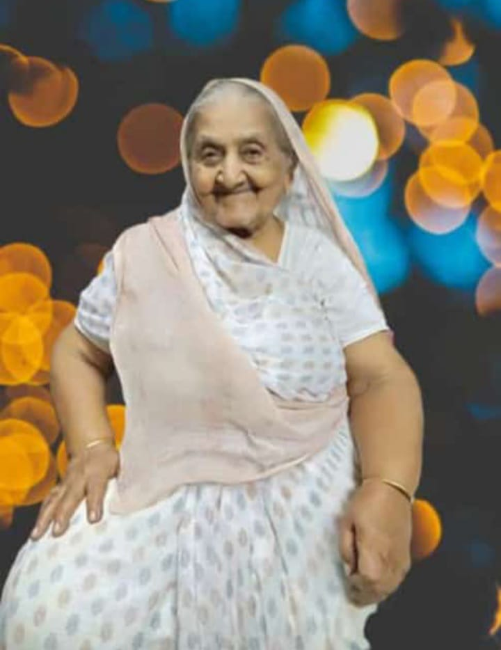

Poonam Started making homemade jewelry at home after marriage,turning her passion into a full time bussiness.She enhances her skills and become independentfor herself but become inspiration for all women through her work.

Jaswantiben Popat
Mumbai,Maharashtra
Jaswantiben Popat was one of the seven women who started Lijjat Papad in 1959 with just ₨80 in Mumbai. What began as a small papad-making bussiness grew into a ₨1600 crore cooprative,giving jobs to over 45,000 women across India.Jaswantiben was honored with the Padma Shri in 2021 for her inspiring contribution to women empowerment.
Sunita Lonkar
Pune, Maharashtra
Sunita from Pune tranformed her home-based Papad bussiness with the Support of the Mann Deshi Foundation.Through training and exposures ,she expanded her venture ,showcasing the impact of community support on women's entrepreneurship.